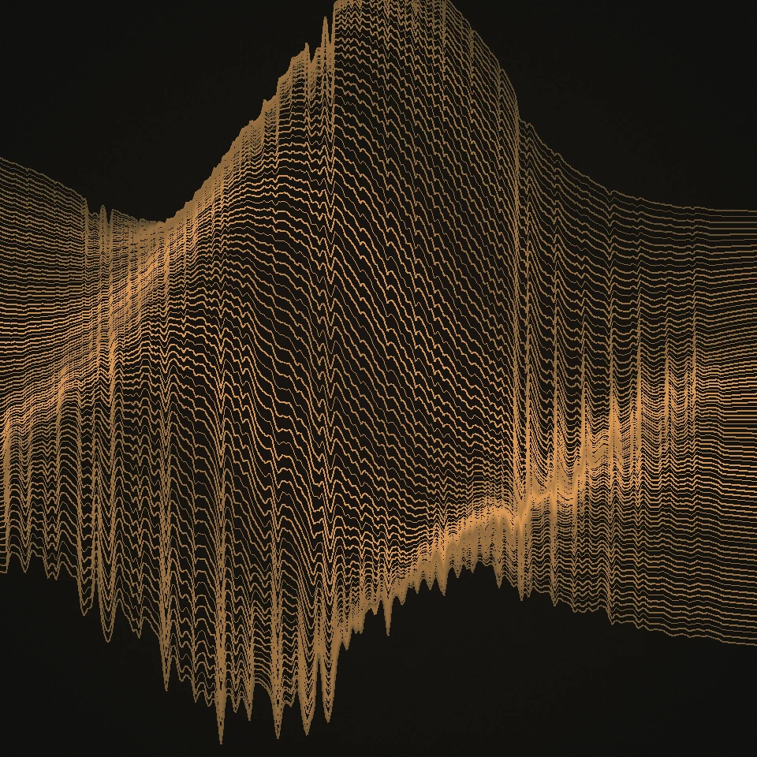

Newwire
Undertow
Studio Master
Earlier mixes
Continuum Mix · Afterlight Clean Mix · Afterlight Mix · Soft Edge Mix · Straight Cut Mix
Sample credits
The soft piano uses Alexander Holm’s Salamander Grand Piano V3, under CC BY 3.0. Newwire selected the soft samples, shortened their attacks and tails, filtered them and matched their levels.
Additional samples come from the Versilian Community Sample Library and VSCO 2 Community Edition, under CC0. The Pulse Bow layers new harmonics and distortion onto VSCO violin recordings. The electronic piano and water drop were synthesized for this mix.